Load Transfer Efficiency
Load Transfer Efficiency is a performance metric used to evaluate Concrete Pavement Joints [2]. It quantifies the reduction in deflection across a joint relative to the deflection that would occur at an unloaded slab edge without load transfer [2], reflecting how effectively a dowel bar or alternative load transfer device transmits wheel loads from the loaded slab to the adjacent unloaded slab, thereby minimizing stresses and deflections [1]. Expressed as the ratio of deflection on the unloaded side to deflection on the loaded side, or as a percentage of load transferred, it measures how effectively this transfer occurs across a transverse joint in concrete pavement [1].
Sources (16)
Introduction to Load Transfer Efficiency (LTE)
Poor load transfer efficiency can lead to longitudinal cracking and excessive faulting in jointed concrete pavements, while also accelerating punchout development in continuously reinforced concrete pavements [2]. Furthermore, load transfer efficiency can exhibit significant spatial variability between adjacent slabs; for instance, one slab may measure good to excellent performance (80% to 90%) immediately followed by poor performance (30% to 50%) in the next slab [3]. This localized inconsistency highlights limitations in assuming uniform joint behavior across a pavement section [3].
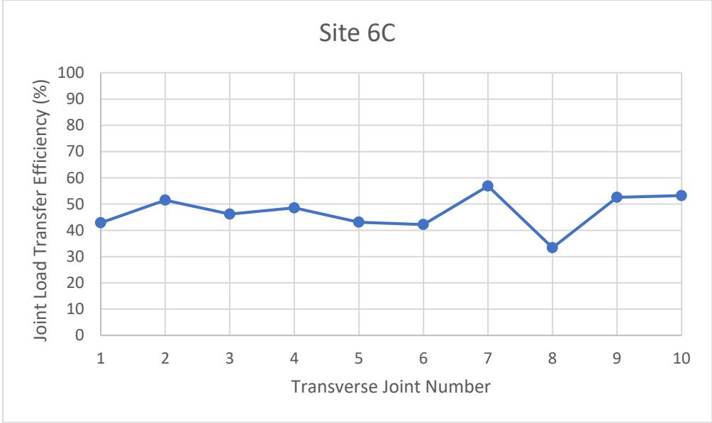
Joint-by-joint LTE results for Site 6C [3]Mechanisms of Efficiency Loss and Degradation
Repetitive high-stress loadings at the dowel bar-concrete interface create voids that increase system deflection before the dowel engages, causing a loss in load transfer efficiency that must then be carried by the subgrade [1]. Specifically, the formation of voids directly above or beneath the dowel at the face of the joint due to repetitive loading results in a 5% to 10% reduction in load transfer efficiency [4]. To account for void formation from repetitive loading, design transfer loads are typically reduced to approximately 45 percent of the design wheel load, reflecting a recommended 5 to 10 percent reduction in efficiency [5]. Furthermore, oblonging in the concrete surrounding the dowel is caused by excessive bearing stresses between the bar and the concrete surface under repeated reversed loadings, which eventually loosens the connection between the dowel and the pavement [4]. While dowel bars can significantly reduce damage from longitudinal cracking, they may also encourage crack propagation once a crack has already occurred in the pavement structure [6]. Regarding alignment and movement, uniform vertical misalignment of dowel bars does not significantly impede joint horizontal movements, whereas non-uniform misalignment can induce joint lock-up and precipitate premature pavement failure [7]. Additionally, corrosion-induced expansion can cause steel dowels to freeze or lock within the joint, preventing the necessary slip for thermal movement and forcing cracking to occur outside of the intended doweled joint [4]. Dowel bars also help minimize the upward curvature that is locked in during construction, as thermal gradients present during the transformation of PCC from a fluid to a solid are connected to these construction-related locked-in curvatures [8]. Creep-induced stress relaxation reduces upward built-in curling over time by allowing viscous recovery of deformation, which can mitigate joint opening and improve long-term load transfer stability under sustained thermal gradients [9].
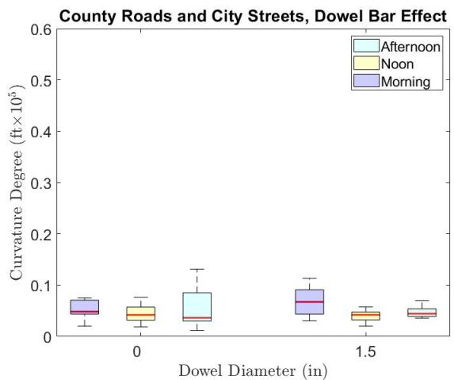
Dowel bar effects on county roads and city streets: (a) curvature IRI, (b) deflection, (c) deflection ratio, (d) degree of curvature (no dowel bar [4 sites, 56 data points], 1.5 in. dowel bar [2 sites, 30 data points]) [8]In rigid pavement design, the loss of support factor is utilized to quantify potential reductions in load transfer capacity caused by the erosion of subbase materials or differential vertical movements beneath the slab; this factor defines the specific area of the pavement slab that experiences a complete loss of support, with AASHTO guidelines categorizing eroded areas into three distinct sizes and shapes [10]. Achieving an adjusted effective modulus of subgrade reaction ($k_{comp}$) value of 150 pci, which is the minimum recommended for rigid pavement design by the Iowa DOT, requires a foundation layer with an effective $k_{comp}$ value of 470 pci when applying a loss of support factor of 1, an adjustment that ensures load transfer calculations account for potential future degradation of subgrade support [10]. Subgrade composition also impacts performance, as pavements built on coarse-grained subgrades generally perform better than those on fine-grained subgrades; fine-grained subgrades accounted for 63% of poorly performing sections compared to 37% for coarse-grained subgrades [8].
 Slab and support conditions defining loss of support factors (from AASHTO 1986) [10]
Slab and support conditions defining loss of support factors (from AASHTO 1986) [10]
Load Distribution Mechanics and Slab Geometry
Slabs with a 10-inch thickness tend to exhibit the highest curling and warping behavior for most indicators, which can negatively impact load transfer consistency across joints [8]. Such issues are further influenced by geometry; skewed slab shapes effectively increase effective slab dimensions compared to rectangular geometries, resulting in higher corner curling stresses and deflections that can compromise joint alignment and load transfer consistency [9]. Additionally, widened slabs should be controlled to a width of 14 feet or less to avoid built-in upward curling, which can significantly increase corner load stresses and compromise joint performance [8]. Regarding spacing, deflection ratio values for slabs with 12 ft joint spacing range from 2.29 to 10.84, while those with 15 ft and 20 ft spacings range from 2.81 to 8.42 and 2.97 to 6.00, respectively, indicating that shorter spacing can lead to higher deflection ratios [8]. Furthermore, the relationship between transverse joint spacing and load transfer efficiency follows a consistent decreasing trend, where LTE values decline as joint spacing increases; this negative correlation is statistically robust across multiple test sites, with higher coefficients of determination indicating a strong predictive link between wider spacing and reduced efficiency [3].
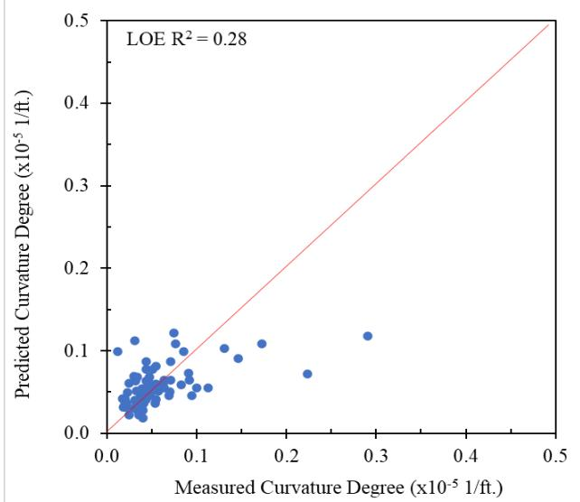
Multiple linear regression modelss prediction results for county roads and city streets: (a) curvature IRI, (b) deflection, (c) deflection ratio, (d) degree of curvature [8]In terms of load distribution, dowel bars closest to the applied wheel load transfer more of the load than those furthest away, meaning not all dowels at a joint actively aid in transferring the load during typical traffic events [1]. If dowel bars achieved 100% efficiency in load transfer, exactly 50% of the wheel load would be transferred to the subgrade while the other 50% would be transferred through the dowels to the adjacent slab [4]. Friberg's analysis indicates that for joints using 0.75-inch or 0.875-inch diameter dowel bars spaced from 12 to 20 inches apart, only the dowels located within a distance of 1.8lr (where lr is the radius of relative stiffness) from the applied load are active in transferring the load [4]. To refine these calculations, Tabatabaie’s finite element modeling indicates that a radius of relative stiffness ($l_r$) value of 1.0 is a more accurate approximation for determining the number of effective dowels actively transferring load than previous estimates [5].
 Load distribution model by Friberg (a), and Tabatabaie (b) [4]
Load distribution model by Friberg (a), and Tabatabaie (b) [4]
Material Properties and Dowel Design Parameters
Research indicates that larger diameter and stiffer bars transfer more load across the joint, as GFRP dowels with a 38 mm (1.5 in.) diameter provide higher shear stiffness and lower bearing stresses on concrete compared to standard 32 mm (1.25 in.) steel dowels, resulting in improved performance despite the material’s low shear strength [1]. In comparative studies, FC dowels showed nearly constant LTE (~44.5%) through 2M cycles, whereas steel dowels decreased from 43.5% to 41% [1]; however, all GFRP doweled joints performed above 75% joint effectiveness, with Glasform consistently above 90% [1]. While higher dowel flexural rigidity (EI) generally increases the modulus of subgrade reaction ($k_0$), softer materials like GFRP may experience localized deformation at the joint face due to high stresses [5]. Furthermore, rectangular dowels offer lower bearing stresses than round dowels but present challenges with concrete consolidation, where voids can account for up to 40 percent of the dowel footprint even under controlled laboratory conditions [5].
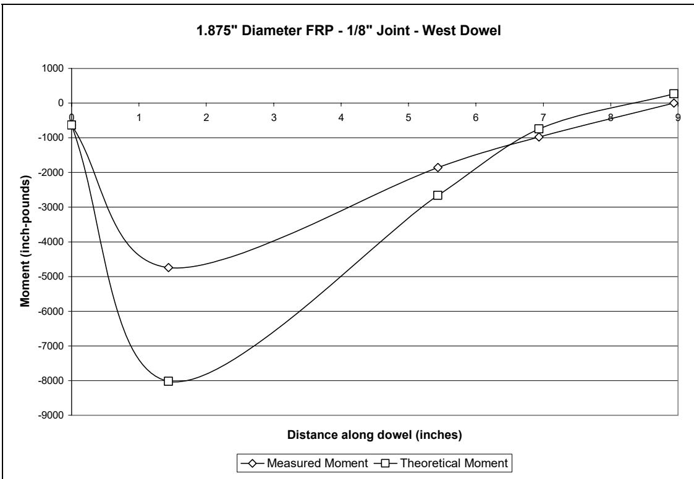
Theoretical and measured moments, round GFRP specimen, west dowel, 1/8-inch joint [5]Environmental and structural factors also influence performance, as higher concrete elastic modulus values correlate with increased curling potential due to reduced creep capacity and greater self-desiccation, which can exacerbate joint opening and reduce effective load transfer under thermal cycling [9]. Statistical analysis indicates that while fiber reinforcement and concrete thickness do not significantly affect mean joint LTE, transverse joint spacing has a statistically significant impact on load transfer efficiency; specifically, sections with 6 ft joint spacing demonstrate average LTE values that are 4.75% to 5.58% higher than those with longer spacings [3].
 BCOA-ME predicted cracking at Site 4 [3]
BCOA-ME predicted cracking at Site 4 [3]
Design Strategies for Zero-Maintenance Pavements
Dowelled joints have been estimated to last 2.5 times longer than non-dowelled joints before requiring maintenance or rehabilitation, highlighting the critical role of dowel bars in long-term performance [8]. To achieve structural adequacy where no distress occurs during the pavement’s service life, Darter’s research on zero-maintenance jointed concrete pavements indicates that short joint spacing is a necessary design parameter to prevent joint faulting, alongside dowel bars and adequate subdrainage [11]. Specifically, shorter joint spacing reduces longitudinal curling stresses in jointed concrete pavements, thereby minimizing differential vertical movements that can disrupt dowel engagement and reduce load transfer efficiency [9]. For instance, shorter transverse joint spacing (e.g., 12 ft versus 15 or 20 ft) produces relatively lower curling and warping, which helps maintain consistent load transfer by minimizing differential vertical movements [8].
Empirical data reveals that joints with very short spacings (5.5 ft or 6 ft) often exhibit lower activation rates compared to standard 12 ft spacing, with some sections showing joint activation rates ranging from only 50% to 80% [3]. This suggests that while shorter spacing may improve LTE metrics, it can simultaneously reduce the frequency of actual joint opening [3].
 Transverse joint spacing versus joint LTE at Sites 4, 6, and 7 [3]
Transverse joint spacing versus joint LTE at Sites 4, 6, and 7 [3]
Traffic Loading and Environmental Effects
In situ moisture content significantly influences subgrade performance and subsequent load transfer efficiency; for example, testing at specific sites has recorded in situ moisture contents ranging from approximately 14.8% to 28.9% depending on the soil classification and drainage conditions, variations which directly impact the modulus of subgrade reaction used in LTE calculations [10]. To prevent water accumulation that could lead to loss of support and reduced load transfer efficiency, hydraulic conductivity requirements for drainable bases are specified; the ACPA recommends a target hydraulic conductivity range of 60 to 120 ft/day for granular bases, while permeable bases must maintain a minimum hydraulic conductivity of 1000 ft/day [10]. Additionally, frost-heave susceptibility ratings are developed based on the percent of material finer than 0.02 mm and USCS soil classification to predict non-uniform heave that can disrupt load transfer mechanisms during winter cycles, helping to identify foundation materials susceptible to frost action which manifests as pavement heave and subsequent loss of strength during thaw periods [10]. Regarding traffic impacts, while longitudinal and transverse cracking generally increases with average daily traffic, empirical data shows that pavement cracking tends to decrease as annual average daily truck traffic (AADTT) increases, suggesting complex interactions between traffic composition and distress development [11].
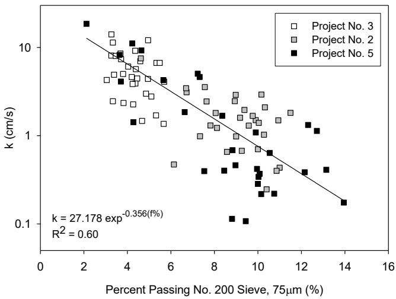
Relationship between in-situ saturated hydraulic conductivity (from air permeability tests) and percent passing no. 200 sieve (from Vennapusa et al. 2006) [10]Thermal and structural factors further influence pavement integrity, as higher surface short-wave absorptivity values increase maximum tensile thermal stresses within the slab, which can intensify warping deflections and reduce the consistency of load transfer across transverse joints [9]. Widened slabs exhibit a more pronounced loss of benefit from load transfer efficiency when loads are applied in the wheel path, behaving like an edge loading case due to extra width away from the slab edge compared to standard wide slabs [6]. Furthermore, a four-axle truck configuration with axle centers placed close to the transverse edges of adjacent slabs on the adjacent slab’s side creates critical loading scenarios that produce significantly higher top-to-bottom tensile stress ratios, reaching up to 2.7 [6]. Finally, the timing of traffic opening relative to concrete mix design significantly influences early-age rebound numbers and density; for instance, C4 mixes achieve optimal rebound characteristics with a five-hour opening time, while M4 mixes perform best when opened after three hours, noting that early compression from appropriate traffic loads can facilitate strength development by improving concrete density before the material fully hardens [12].
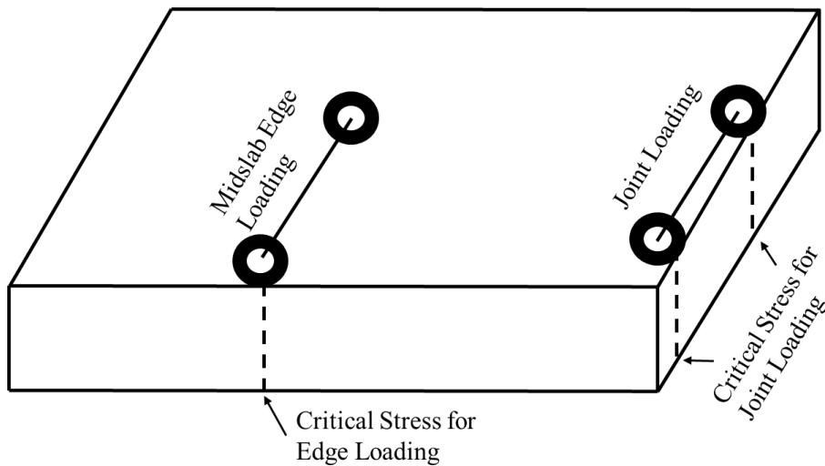
Critical stresses for loading at slab edge and transverse joint [6]Performance in Overlays and Patching Applications
The presence of transverse cracking in pavement sections correlates with higher International Roughness Index (IRI) values, indicating that distress accumulation directly impacts ride quality metrics; conversely, pavement sections exhibiting higher PCI values demonstrate lower levels of both longitudinal and transverse cracking [11]. In concrete patching applications, the use of smooth dowels spaced at one-foot intervals across transverse faces can achieve load transfer values exceeding 90%, with recorded performance ranging from 90.3% to 99%. While values above 75% are considered adequate for good joint performance, measurements on the leave side of a patch may be slightly lower than those on the approach side due to sensor positioning [12]. For overlay applications without joint reinforcement, target load transfer values range from 75% to 100%, with specific test sections achieving up to 99% using deflection-based calculations; although values exceeding 100% have been recorded, these are attributed to data collection equipment errors rather than actual performance [13]. Load transfer calculations for overlays utilize deflections relating specifically to a 9,000 lb. applied load to determine the percent load transfer as the ratio of leave-side deflection to loaded approach-side deflection multiplied by 100 [13].
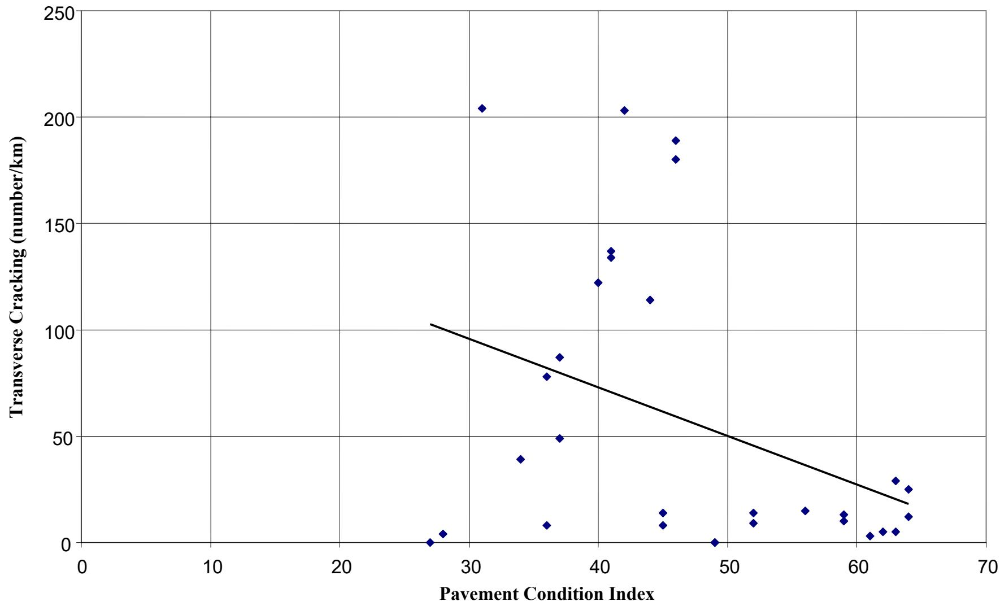
Transverse cracking vs. Pavement Condition Index [11]Surface preparation methods significantly influence load transfer in overlays, with scarification providing the best performance compared to patching or the addition of an asphaltic concrete stress relief layer, as the latter two techniques are more prone to variation in surface bonding ability and yield individual sections that perform less effectively than scarified sections [13]. In thin concrete overlays less than 3.5 inches deep, the inclusion of graded fibrillated polypropylene fibers at a dosage rate of 2.5 pounds per cubic yard increases performance reliability by compensating for strict construction depth control requirements [14]. For normal mixes, the maximum spacing for transverse and longitudinal joints in concrete overlays should not exceed twice the overlay depth in inches, though larger spacings may be considered when specific fiber types are included [14]. Furthermore, the inclusion of fibers in overlay mixes does not significantly impact load transfer values or their variation over time, with different fiber types exhibiting similar maximum and minimum values for individual tests, and panel size also fails to provide any appreciable difference in load transfer values during the initial years of service [13].
Testing Methodologies and Analytical Modeling
- Deflection LTE relates to stress LTE and is sensitive to applied load magnitude [1]
The interim report on elliptical steel dowel performance (Cable et al. 2006) on Iowa Highway 330 found that FWD-based load transfer showed no consistent performance trends from changes in dowel size or shape. Dowel spacing of 12 and 15 inches indicated equal performance, while 18-inch spacing provided a lower level of load transfer. Load transfer values were highest in fill sections and lowest in transition sections [15].
In elliptical steel dowel test sections, load transfer values were consistently highest in fill sections and lowest in transition sections, indicating that subgrade support conditions significantly influence joint performance. This variation was observed despite no consistent trends from changes in dowel size or shape. [15]
The modulus of dowel support must be adjusted depending on the level of applied load even within the joint’s global linear range because Timoshenko’s equation does not account for complex nonlinear behavior associated with dowel yielding. [1]
Artificial neural network (ANN) models can be trained using finite element outputs to predict pavement stresses and deflections with average errors less than 0.5 percent, effectively capturing complex multidimensional mappings of joint load transfer efficiencies. [16]
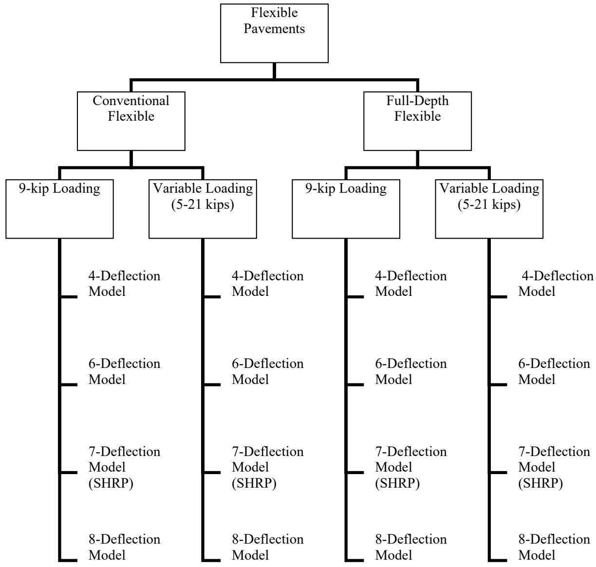
ILLI-PAVE-based ANN backcalculation models for flexible pavements [16]In ISLAB2000 finite element solution databases, load transfer efficiency is typically held at a constant value of 50% while varying other parameters like concrete modulus and subgrade reaction to generate realistic pavement performance data. [16]
 Comparison of ISLAB2000, DIPLOMAT, and KENSLAB finite element model solutions for different pavement and foundation configurations [16]
Comparison of ISLAB2000, DIPLOMAT, and KENSLAB finite element model solutions for different pavement and foundation configurations [16]
The relationship between stress-based and deflection-based LTE indexes allows for the determination of one index if the other is known, though deflection-based indices are more widely utilized. [2]
Curvature IRI values are highest in slabs with 15 ft joint spacing (42.4 to 110.0 in./mile) compared to 12 ft (33.9 to 58.9 in./mile) and 20 ft (59.5 to 75.4 in./mile) spacings, suggesting that intermediate joint spacing may exacerbate roughness due to curling. [8]
 Transverse joint spacing effects on county roads and city streets: (a) curvature IRI, (b) deflection, (c) deflection ratio, (d) degree of curvature (12 ft joint spacing [3 sites, 32 data points], 15 ft joint spacing [3 sites, 39 data points], 20 ft joint spacing [1 site, 15 data points]) [8]
Transverse joint spacing effects on county roads and city streets: (a) curvature IRI, (b) deflection, (c) deflection ratio, (d) degree of curvature (12 ft joint spacing [3 sites, 32 data points], 15 ft joint spacing [3 sites, 39 data points], 20 ft joint spacing [1 site, 15 data points]) [8]
The modified AASHTO T253 test procedure utilizes linear loads applied parallel to the joints at a distance of three inches inside the joint faces, which reduces flexural behavior in the center block compared to the uniform load application of the original standard. [5]
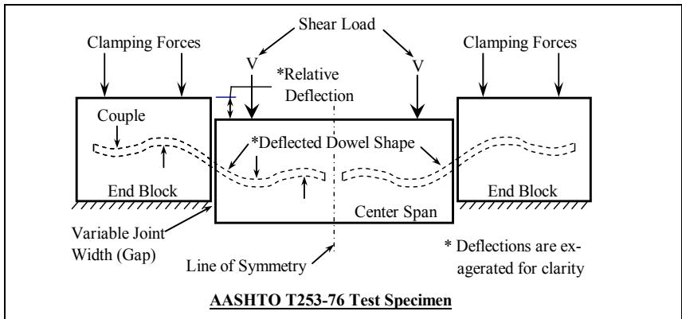
Modified AASHTO T253 test (15) [5]Deflection-based LTE testing typically involves placing the FWD load plate 6 inches from the joint and recording deflections with sensors positioned at the center of the plate and 12 inches across the joint. [2]
 FWD Sensor Spacings and Schematic View of the FWD Deflection Basin [2]
FWD Sensor Spacings and Schematic View of the FWD Deflection Basin [2]
Testing protocols recommend performing LTE evaluations at three specific load levels—8 kips, 12 kips, and 16 kips—to capture performance variations under different stress conditions. [2]
Positioning the FWD load plate on the leave side of the joint during testing yields more conservative load transfer efficiency values compared to approach-side loading. [2]
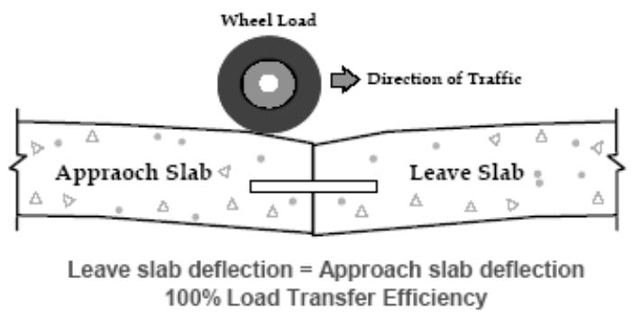
Illustration of poor and good load transfer across a joint [2]Falling weight deflectometer (FWD) testing for load transfer efficiency typically involves applying one seating drop followed by four loading drops with forces ranging from approximately 5,000 to 15,000 lb. To ensure comparability across different test locations and contact stresses, measured deflection values are normalized to a standard applied force of 9,000 lb. [10]
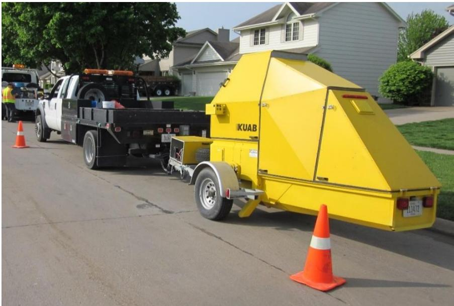
KUAB falling weight deflectometer [10]The calculation of LTE relies on measuring deflection under the loading plate on the loaded slab ($D_0$) and deflection on the unloaded slab using a sensor positioned approximately 12 inches from the center of the plate. This specific sensor placement is critical for accurately capturing the differential settlement that defines load transfer performance. [10]
Voids beneath pavement slabs, which directly reduce load transfer efficiency by creating unsupported areas, can be detected by plotting applied load measurements against corresponding deflection values to determine a “zero” load intercept. AASHTO standards identify an intercept value greater than 2 mils as the critical threshold indicating the presence of voids. [10]
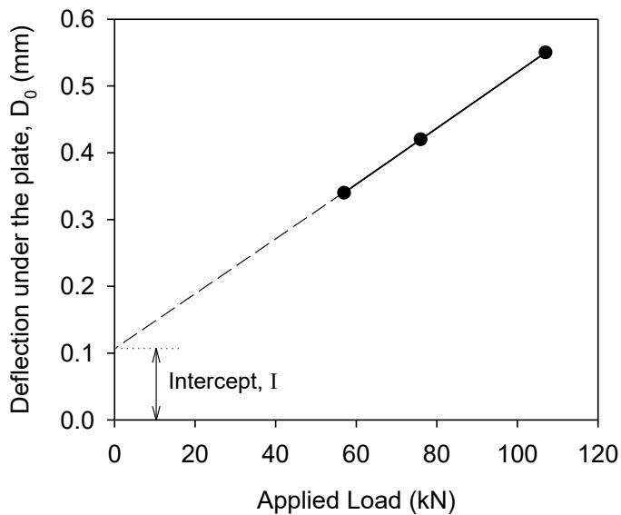
Void detection using load-deflection data from FWD test [10]See also
References
- M. L. Porter and R. J. Guinn, Jr., "Synthesis of Dowel Bar Research / Assessment of Dowel Bar Research," Center for Transportation Research and Education (CTRE), Iowa State University, Ames, IA, Rep. HR-1080, 2002. [Online]. Available: https://www.intrans.iastate.edu/wp-content/uploads/2018/03/dowelbarsynthesis.pdf
- B. M. Phares, H. Ceylan, R. Souleyrette, O. Smadi, and K. Gopalakrishnan, "Development of a High Speed Rigid Pavement Analyzer – Phase I Feasibility and Need Study," National Concrete Pavement Technology Center, Ames, IA, Rep. TPF-5(136), 2008. [Online]. Available: https://www.intrans.iastate.edu/wp-content/uploads/2018/03/high_speed_pvmt_analyzer_w_cvr.pdf
- D. King, B. Yang, P. Taylor, and H. Ceylan, "Field Performance of Fiber-Reinforced Concrete Overlays," Institute for Transportation, Iowa State University, Ames, IA, Rep. TR-816, 2025. [Online]. Available: https://www.intrans.iastate.edu/wp-content/uploads/2025/05/field_performance_of_frc_overlays_w_cvr.pdf
- M. L. Porter, J. K. Cable, J. F. Harrington, N. J. Pierson, and A. W. Post, "Field Evaluation of Elliptical Fiber Reinforced Polymer Dowel Performance," PCC Center, Iowa State University, Ames, IA, Rep. DTFH61-01-X-00042 (Project 5), 2005. [Online]. Available: https://www.intrans.iastate.edu/wp-content/uploads/2018/03/frp_dowel.pdf
- M. L. Porter, J. K. Cable, F. S. Fanous, J. F. Harrington, and N. J. Pierson, "Laboratory Study of Structural Behavior of Alternative Dowel Bars," CTRE, Iowa State University, Ames, IA, Rep. TR-510, 2006. [Online]. Available: https://www.intrans.iastate.edu/wp-content/uploads/2018/03/dowel_bars_web.pdf
- H. Ceylan, S. Kim, Y. Zhang, S. Yang, O. Kaya, K. Gopalakrishnan, and P. Taylor, "Prevention of Longitudinal Cracking in Iowa Widened Concrete Pavement," Institute for Transportation, Ames, IA, Rep. TR-700, 2018. [Online]. Available: https://www.intrans.iastate.edu/wp-content/uploads/2018/07/longitudinal_cracking_prevention_in_widened_concrete_pvmt_w_cvr.pdf
- J. Grove, G. Fick, T. Rupnow, and F. Bektas, "Material and Construction Optimization for Prevention of Premature Pavement Distress in PCC Pavements," National Concrete Pavement Technology Center, Ames, IA, Rep. TPF-5(066), 2008. [Online]. Available: https://www.intrans.iastate.edu/wp-content/uploads/2018/03/mco-final.pdf
- K. Tian, D. King, B. Yang, S. Kim, A. Alhasan, and H. Ceylan, "Impact of Curling and Warping on Concrete Pavement: Phase II," Program for Sustainable Pavement Engineering and Research (PROSPER), Iowa State University, Ames, IA, Rep. TR-749, 2023. [Online]. Available: https://intrans.iastate.edu/app/uploads/2023/06/Impact_of_Curling_and_Warping_Phase_II_w_cvr.pdf
- H. Ceylan, S. Yang, K. Gopalakrishnan, S. Kim, P. Taylor, and A. Alhasan, "Impact of Curling and Warping on Concrete Pavement," Institute for Transportation, Ames, IA, Rep. TR-668, 2016. [Online]. Available: https://www.intrans.iastate.edu/wp-content/uploads/2018/03/curling_and_warping_impact_on_concrete_pvmt_w_cvr.pdf
- D. White and P. Vennapusa, "Optimizing Pavement Base, Subbase, and Subgrade Layers for Cost and Performance on Local Roads," Concrete Pavement Technology Center and Center for Earthworks Engineering Research, Ames, IA, Rep. TR-640, 2014. [Online]. Available: https://www.intrans.iastate.edu/wp-content/uploads/2018/03/local_rd_pvmt_optimization_w_cvr.pdf
- J. K. Cable and H. Ceylan, "Defining the Attributes of Good In-Service Portland Cement Concrete Pavements," Center for Portland Cement Concrete Pavement Technology, Iowa State University, Ames, IA, Rep. DTFH61-01-X-00042 (Project 9), 2004. [Online]. Available: https://www.intrans.iastate.edu/wp-content/uploads/2018/03/pavement_attributes.pdf
- J. K. Cable, K. Wang, S. J. Somsky, and J. Williams, "Portland Cement Concrete Patching Techniques vs. Performance and Traffic Delay," Center for Portland Cement Concrete Pavement Technology, Iowa State University, Ames, IA, 2004. [Online]. Available: https://www.intrans.iastate.edu/wp-content/uploads/2018/08/patching_report.pdf
- J. K. Cable, J. L. Morud, and T. R. Tabbert, "Evaluation of Composite Pavement Unbonded Overlays: Phase III," CTRE, Iowa State University, Ames, IA, Rep. TR-478, 2006. [Online]. Available: https://rosap.ntl.bts.gov/view/dot/24065
- J. K. Cable and J. Williams, "Evaluation of Unbonded Ultrathin Whitetopping of Brick Streets," CTRE, Iowa State University, Ames, IA, Rep. TR-466, 2006. [Online]. Available: https://www.intrans.iastate.edu/wp-content/uploads/2018/03/whitetopping.pdf
- J. K. Cable, S. L. Totman, and N. Pierson, "Field Evaluation of Elliptical Steel Dowel Performance," Center for Transportation Research and Education, Ames, IA, 2006. [Online]. Available: https://www.intrans.iastate.edu/wp-content/uploads/2018/03/elliptical-steel-dowels.pdf
- H. Ceylan, A. Guclu, M. B. Bayrak, and K. Gopalakrishnan, "Nondestructive Evaluation of Iowa Pavements, Phase 1," CTRE, Iowa State University, Ames, IA, Rep. CTRE 04-177, 2007. [Online]. Available: https://www.intrans.iastate.edu/wp-content/uploads/2018/03/nde-pavements.pdf